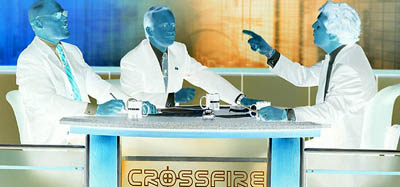

Beyond Opposition in Politics
by phil on Monday Nov 19, 2012 8:18 PM

Perhaps it's time to think beyond opposition in politics. Yes, a spirited debate is good, but opposition and counterpoint for counterpoint's sake may be immensely unproductive. I often see policy debates that shouldn't be debates. The debate exists simply because there has to be an opposition. Opposition is the immediate way to build a base of support. Opposition is the obvious journalistic narrative. And opposition is an easy niche to fill in the media landscape.
Opposition is useful in a debate between two people, because the back-and-forth distills the policy to an optimal outcome. But when played out over the democratic masses, what you really get is a gradient of positions spread out among the populace. This is due to the default apathy of the public and the various levels of informedness that people accept before taking a position.
Opposition has a way of becoming self-fulfilling. For example, United States Republicans were in favor of the universal health insurance mandate when it wasn't President Obama's idea. And so they ginned up support in opposition and eventually came to believe their own spin. Which makes the following statement controversial in our current way of thinking: "Healthcare reform should have been conducted with minimal or no opposition."
China's "harmonization" philosophy is the logical extreme of curtailing opposition. In China, freedom of speech has been reduced in order to achieve more desirable political outcomes. However, the quality of the desired outcome is corrupt without a free and open discussion. So the question is then, can you strike a balance between harmony and democracy?